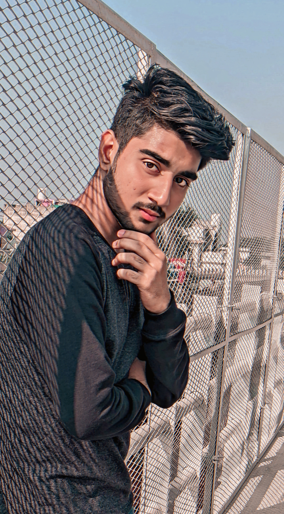

| ADITYA RAJ |
Hi i'm Aditya raj (The Broken musician)
My dream was to become a singer but dream did not come true,
but now I am a web developer and I am Happy with this profession,
About this website: some singers like me are not popular But very talented,
you will find his songs here, so support him and enjoy music.
Have A Good Day